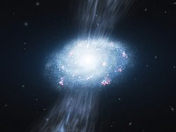

El proceso detallado por el cual se formaron las primeras galaxias es una cuestión abierta en astrofísica. Las teorías se pueden dividir en dos categorías: de arriba abajo y de abajo arriba. En las teorías de arriba abajo, como el modelo ELS (de Eggen, Lynden-Bell y Sandage), las protogalaxias se forman en un colapso simultáneo a gran escala durante aproximadamente cien millones de años. En las teorías de abajo arriba, como el modelo SZ (de Searle y Zinn), se forman primero pequeñas estructuras parecidas a cúmulos globulares y, después, varios de estos objetos se unen para formar un galaxia más grande.
Una vez que las protogalaxias comienzan a formarse y contraerse, aparecen las primeras estrellas del halo (llamadas estrellas de población III). Estas estrellas están compuestas casi enteramente de hidrógeno y helio y pueden haber sido enormes. De ser así, estas gigantes estrellas habrían consumido rápidamente su combustible para convertirse en supernovas y liberar elementos pesados en el medio interestelar. Esta primera generación de estrellas reionizó el hidrógeno neutro circundante creando una burbuja en expansión a través de la cual la luz podía viajar con facilidad.

En junio de 2015, un equipo de astrónomos presentó pruebas de estrellas de población III en la galaxia Cosmos Redshift 7 (o CR7) con un corrimiento al rojo de 6,6. Este tipo de estrellas (esto es, con un elevado corrimiento al rojo) es probable que hayan existido en el universo más temprano y pueden haber comenzado la producción de elementos químicos más pesados que el hidrógeno, necesarios para la posterior formación de planetas y la vida tal y como la conocemos